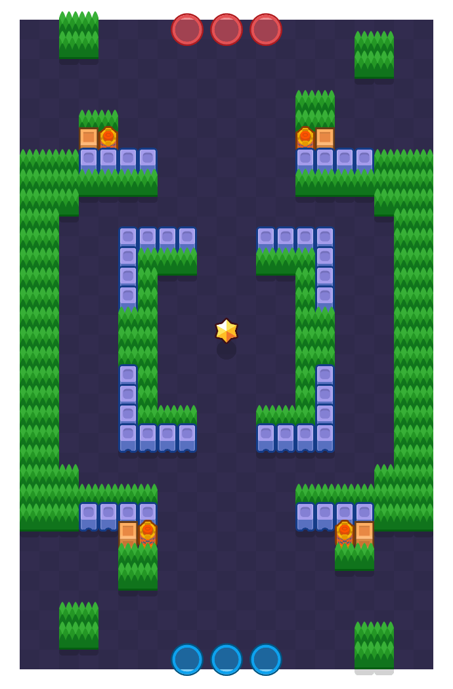

바위 요새(Stone Fort)

게임 모드
현재 상태
삭제
제작자
슈퍼셀
존재 기간
2017년 6월 15일 ~ 2019년 1월 29일
마지막 경쟁전 등장
알 수 없음
젬 그랩의 "바위 요새"와 같은 맵으로, 현재는 똑같은 바위 요새지만 베타 시절에는 "테라코타 사각형"이라는 별도의 이름을 갖고 있었다. 베타 시절부터 쭉 존재하다가 2019년 1월 29일 삭제된 후 자취를 감췄다.